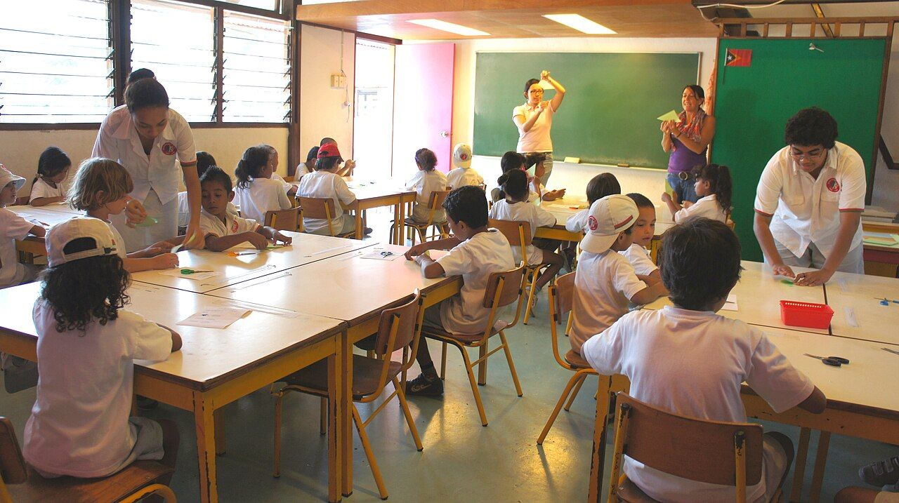
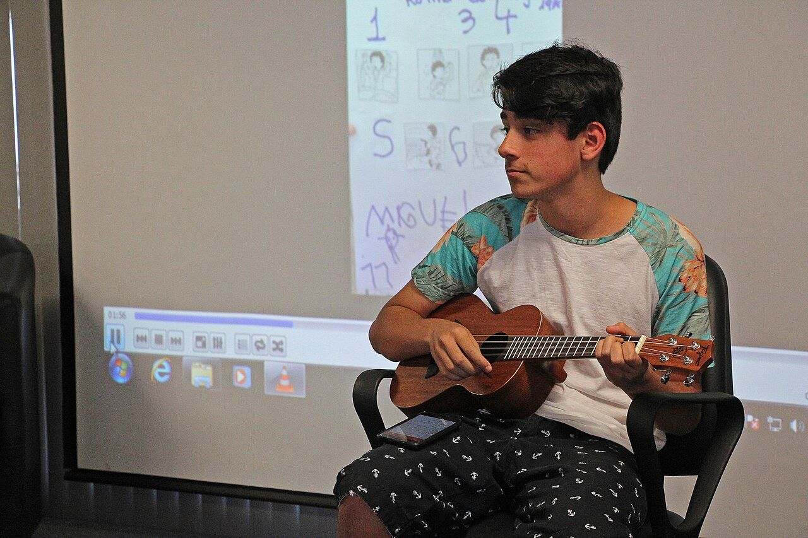

Estudar melhor, não só estudar mais.
Técnicas simples, com base em pesquisas sobre como o cérebro aprende, para você aprender mais e esquecer menos, no seu ritmo.

6 jeitos de aprender de verdade
Pesquisas em psicologia da aprendizagem mostram que praticar a recordação e espaçar os estudos estão entre as técnicas mais eficazes.
Pratique lembrar
Feche o caderno e tente lembrar. Faça perguntas, use cartões (flashcards) ou explique em voz alta. Lembrar é o que fixa.
Espace as revisões
Revise no dia seguinte, depois de 3 dias, depois de 1 semana. Pouco e várias vezes vale mais que muito de uma vez.
Blocos com pausas
Estude 25 minutos e descanse 5 (técnica Pomodoro). A cada 4 blocos, uma pausa maior.
Palavras + imagens
Faça mapas mentais, desenhos e esquemas junto com o texto. Duas formas de representar ajudam a lembrar.
Explique para alguém
Ensinar um colega (ou o seu bichinho!) mostra o que você já entendeu e o que falta.
Misture os assuntos
Alternar tipos de exercício (intercalar) treina o cérebro a escolher a estratégia certa.
Cronômetro de estudos
Escolha o tempo, aperte “Iniciar” e foque. O site avisa (com som de voz) quando for hora da pausa.
Hora de focar 📚
Blocos concluídos hoje: 0
Cada pessoa tem o seu jeito, e ele merece respeito
- Tem TDAH? Use blocos curtos de 10–15 minutos, deixe o celular longe e marque cada tarefa concluída.
- Tem dislexia? Ouça o texto (botão ♿ → “Ler esta página”), aumente a fonte e use a leitura facilitada.
- Baixa visão? Ative o alto contraste e o zoom do navegador (Ctrl e +).
- É surdo? Prefira vídeos com Libras ou legenda e faça resumos visuais.
- Fica ansioso? Divida o conteúdo em partes pequenas e comemore cada etapa.
E lembre-se: pedir adaptação não é “pedir moleza”. É um direito garantido pela Lei Brasileira de Inclusão.

Um plano simples para a semana
| Dia | O que fazer | Tempo |
|---|---|---|
| Segunda | Revisar a matéria da semana anterior com perguntas | 2 × 25 min |
| Terça | Matemática: exercícios misturados | 2 × 25 min |
| Quarta | Leitura + mapa mental (Português, História ou Ciências) | 2 × 25 min |
| Quinta | Explicar um conteúdo para alguém da família | 1 × 25 min |
| Sexta | Flashcards dos conteúdos da semana | 1 × 25 min |
| Fim de semana | Descanso, esporte, sono e lazer também fazem parte da aprendizagem | 😊 |